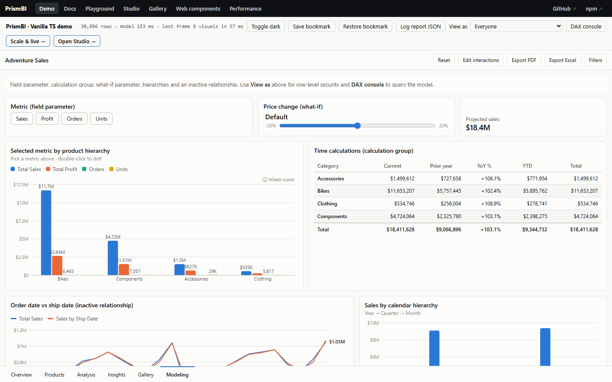

Advanced modeling
These features build on data modeling: relationship options, calculated tables, calculation groups, parameters, hierarchies, perspectives and row-level security.
Relationship options #
model.addRelationship({
from: 'Sales[ProductId]', // many side
to: 'Products[Id]', // one side
crossFilter: 'both', // 'single' (default): to → from only; 'both': also from → to
active: true, // inactive relationships only filter inside USERELATIONSHIP
cardinality: 'manyToOne', // or 'manyToMany' (duplicates allowed on `to`, no RELATED across it)
});| Need | Use |
|---|---|
| A dimension filtered by facts (e.g. "products sold in this region") | crossFilter: 'both', or CALCULATE(…, CROSSFILTER(Sales[ProductId], Products[Id], BOTH)) per measure |
| Two dates on one fact (order date, ship date) | One active relationship plus active: false on the others. Measures use CALCULATE([Sales], USERELATIONSHIP(Sales[ShipDate], Date[Date])) |
| Budgets at a coarser grain (category × year) | cardinality: 'manyToMany' from Budget[Category] to Products[Category] |
| Filtering by a column with no relationship | CALCULATE([Sales], TREATAS(VALUES(Targets[Region]), Region[Name])) |
With bidirectional filtering, a dimension is narrowed by filters coming from the other side of the fact (other dimensions, or the fact's own columns). A filter on a dimension's own columns does not narrow it to "only members with facts", which matches Power BI.
Calculated tables and table queries #
model.addCalculatedTable('Category Sales', 'SUMMARIZECOLUMNS(Products[Category], "Sales", [Total Sales])');
model.evaluateTable('TOPN(5, ADDCOLUMNS(VALUES(Products[Name]), "S", [Total Sales]), [S])');
// → { columns: ['Name', 'S'], rows: [['Road Bike', 3000], …] }
model.recalculateTables(); // after changing data (refreshTable does this for you)Table functions: SUMMARIZE, SUMMARIZECOLUMNS, ADDCOLUMNS, SELECTCOLUMNS, CROSSJOIN, UNION, INTERSECT, EXCEPT, GENERATE, ROW, DATATABLE, GENERATESERIES, CALENDAR, TREATAS, plus FILTER, VALUES, ALL and TOPN.
Calculation groups #
A calculation group rewrites whatever measure is evaluated while one of its items is selected (by a slicer, a filter, or because the visual groups by it). One group replaces dozens of near-identical measures.

model.addCalculationGroup({
name: 'Time Calc',
column: 'Calculation', // default "Name"
precedence: 10, // higher applies first when groups combine
items: [
{ name: 'Current', expression: 'SELECTEDMEASURE()' },
{ name: 'Prior year', expression: 'CALCULATE(SELECTEDMEASURE(), SAMEPERIODLASTYEAR(Date[Date]))' },
{ name: 'YTD', expression: 'TOTALYTD(SELECTEDMEASURE(), Date[Date])' },
{ name: 'YoY %', expression: 'VAR py = CALCULATE(SELECTEDMEASURE(), SAMEPERIODLASTYEAR(Date[Date])) RETURN FORMAT(DIVIDE(SELECTEDMEASURE() - py, py), "+0.0%")' },
],
});{ type: 'matrix', fields: { rows: 'Products[Category]', columns: "'Time Calc'[Calculation]", values: 'Total Sales' } }
{ type: 'slicer', fields: { field: "'Time Calc'[Calculation]" }, format: { slicer: { style: 'tiles', single: true } } }Inside items you can use SELECTEDMEASURE(), SELECTEDMEASURENAME() and ISSELECTEDMEASURE([A], [B]). With no item selected (or several), measures evaluate normally. Values keep the measure's format. To give an item its own format, return text with FORMAT(), as the YoY % item does.
Field parameters #
A field parameter lets report users pick which measure or column a visual shows:
model.addFieldParameter('Metric', [
{ label: 'Sales', field: 'Total Sales' },
{ label: 'Profit', field: 'Total Profit' },
{ label: 'Region', field: 'Region[Name]' },
]);{ type: 'slicer', fields: { field: 'Metric[Metric]' }, format: { slicer: { style: 'tiles', single: true } } }
{ type: 'clusteredColumn', fields: { category: 'Products[Category]', values: 'Metric[Metric]' } }Every field well expands Metric[Metric] to the selected fields, or to all of them when nothing is selected. In code: model.resolveFieldParameter('Metric[Metric]', filters).
What-if parameters #
model.addWhatIfParameter('Price Change', { min: -0.2, max: 0.2, step: 0.05, default: 0, format: '0%' });
// creates table 'Price Change' and measure [Price Change Value]
model.addMeasure('Projected Sales', '[Total Sales] * (1 + [Price Change Value])');{ type: 'slicer', fields: { field: "'Price Change'[Price Change]" }, format: { slicer: { style: 'slider' } } }Aggregation tables #
An aggregation table summarizes a large fact table at a coarser grain (per day and product, say), and answers every query it can, as Power BI's "manage aggregations" does. The detail table answers the rest; it can even be empty locally while an SQL engine holds its rows.
model
.addTable('SalesAgg', dailyRows) // OrderDate, ProductKey, Amount, Qty, Rows
.addRelationship({ from: 'SalesAgg[OrderDate]', to: 'Date[Date]' })
.addRelationship({ from: 'SalesAgg[ProductKey]', to: 'Product[ProductKey]' })
.addAggregation({
table: 'SalesAgg',
detail: 'Sales',
groupBy: { OrderDate: 'OrderDate', ProductKey: 'ProductKey' }, // detail column → aggregation column
columns: { SalesAmount: { sum: 'Amount' }, Quantity: { sum: 'Qty', max: 'MaxQty', count: 'QtyCount' } },
rows: 'Rows', // detail rows per group, for COUNTROWS
});
model.query({ groupBy: ['Product[Category]', 'Date[Year]'], values: ['Total Sales', 'Margin %'] }).aggregation; // 'SalesAgg'-
Covered queries: every grouping, filter and
CALCULATEcolumn is on a table the aggregation is related to (directly or further along many-to-one relationships), on the aggregation itself, or a detail column ingroupBy. Measures (followed through other measures) may useSUM,MIN,MAX,COUNT/COUNTAandAVERAGEof mapped columns (AVERAGEneedssumandcount),COUNTROWSof the detail table (withrows),MIN,MAXandDISTINCTCOUNTof grouped-by columns, and anything that doesn't touch the detail table:CALCULATEfilters, time intelligence,DIVIDEand the rest. -
Not covered, answered from the detail table: other columns of the detail table, iterators or
FILTERover it, distinct counts of columns it doesn't group by, Top N filters, compiled row filters, and any query while row-level security is active. -
Which one:
result.aggregationnames the table that answered;model.aggregationFor(spec)tells without running. With several, the higherprecedencewins, then the smaller table. Results keep the field names and formats asked for. -
Power BI: aggregation mappings (
alternateOfin TMDL ormodel.bim) come across in the import.
Hierarchies, display folders, perspectives #
model.addHierarchy('Date', 'Calendar', ['Year', 'Quarter', 'Month']);
// any drillable well: { category: 'Date[Calendar]' }; a slicer on it becomes a tree
model.addTable('Sales', rows, { Amount: { folder: 'Money' } });
model.addMeasure('Total Sales', 'SUM(Sales[Amount])', { folder: 'KPIs' });
model.addPerspective('Sales analysis', ['Sales', 'Products', 'Total Sales']);
model.fields({ perspective: 'Sales analysis' }); // only those tables / fieldsRow-level security #
model
.addRole('Europe', { Region: 'Region[Group] = "Europe"' })
.addRole('Region manager', { Region: 'Region[Manager] = USERNAME()' });
model.setRoles(['Region manager'], { user: 'alice@contoso.com' });
model.setRoles(null); // remove security-
A rule is a DAX boolean evaluated once per row of its table. Allowed rows flow through relationships like any filter, so restricting
RegionrestrictsSales. - With several active roles, each table keeps the rows any of them allow. Restrictions on different tables combine.
-
Security is applied below the filter context, so
ALL(),REMOVEFILTERS()andALLSELECTED()can't remove it. Slicer domains, filter pane lists, totals and exports all respect it. -
USERNAME(),USERPRINCIPALNAME()andCUSTOMDATA()return what you pass tosetRoles.
Row-level security in the browser decides what the report shows, not what the user can download. Every row you send to the client can be read there. For real data protection, filter on the server before sending data, and use the same role definitions to describe the rules.
Try it #
Row-level security: the same measure, as seen by a role:
model.addRole('Europe', { Region: 'Region[Group] = "Europe"' });
const everyone = model.evaluate('[Total Sales]');
model.setRoles(['Europe']);
return { everyone, europeOnly: model.evaluate('[Total Sales]') };On the docs site (npm run docs), ▶ Run in playground opens it in an editor next to its output.